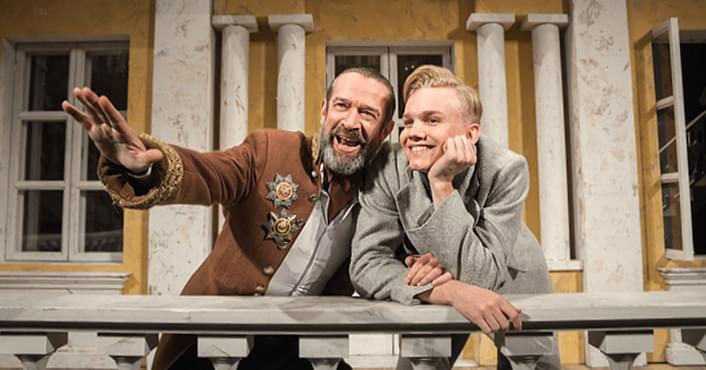

Единственным положительным героем моей комедии является смех! Н. В. Гоголь о «Ревизоре»
- Вводное занятие
- Теоретико-литературные понятия
- Из древнерусской литературы
- Из литературы XVIII в.
- Из литературы первой половины XIX в.
- Романтизм. В. А. Жуковский. Стихотворение «Море». Баллада «Светлана»
- Реализм. А. С. Грибоедов. Пьеса «Горе от ума»
- А. С. Пушкин. Лирика
- А. С. Пушкин. Роман «Капитанская дочка». Поэма «Медный всадник»
- А. С. Пушкин. Роман «Евгений Онегин»
- М. Ю. Лермонтов. Лирика. Поэмы.
- М. Ю. Лермонтов. Роман «Герой нашего времени»
- Н. В. Гоголь. Пьеса «Ревизор».
Повесть «Шинель» - Н. В. Гоголь. Поэма «Мертвые души»
- Из литературы второй половины XIX в.
- Из литературы конца XIX – начала XX в.
- Из литературы первой половины XX в.
- Из литературы второй половины ХХ в. – начала XXI в.

Н. В. Гоголь. Пьеса «Ревизор». Повесть «Шинель»
Занятие № 13

Самый молодой Хлестаков (Владислав Миллер, 20 лет) в истории российского театра
Изучение материала по теме
На этом этапе вы изучаете материал по теме занятия, полученный на указанный e-mail.
файлы в формате pdf
видео-материалы
презентация
Выполнение тестовых заданий
Данный этап предполагает применение полученных знаний на практике. Вы выполняете тест (от 1 до 5 вариантов), следуя пошаговой инструкции (плану ответа с необходимыми комментариями).
Каждый вариант составлен в полном соответствии с требованиями ЕГЭ.
Комплектация варианта теста (состав заданий):
- 1−7 (задания с кратким ответом),
- 8−9 (задания с развернутым ответом в объеме 5−10 предложений),
- 17 (развернутый аргументированный ответ в жанре сочинения объемом не менее 200 слов),
- или 10−14 (задания с кратким ответом),
- 15−16 (задания с развернутым ответом в объеме 5−10 предложений),
- 17 (развернутый аргументированный ответ в жанре сочинения объемом не менее 200 слов).
5 вариантов
Контроль усвоения
- Выполнив тест, вы отправляете его на проверку. Она осуществляется в соответствии с системой оценивания ЕГЭ по литературе.
- Оценка ответа по каждому заданию расписывается по критериям и сопровождается комментариями.
- С учетом полученных замечаний вы дорабатываете свои ответы и вновь присылаете их на проверку.
- Тест считается выполненным, когда по каждому критерию бы набираете максимальное количество баллов.
переписка по e-mail
30 минут
55 500 руб.